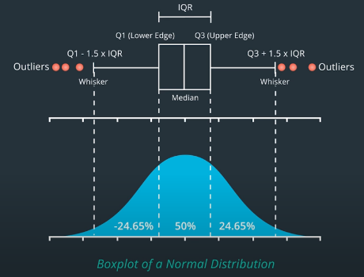

AI for Trading
Table of Contents
1 Financial Data
1.1 Data Types
1.1.1 Market Data
- Tick Data
- Quote Data: bid, bid size, ask, ask size
- Trade Data: last trade, volume
- OHLC: open, high, low, close
- Orderbook
- Transaction
1.1.2 Corporate Actions
- Stock Splits
- Cash Dividends: Partial cash distribution of company earnings.
- Symbol, Ex-Dividend Date, Dividend, Record Date, Announcement Date, Payment Date
- Adjusted Price Factor: \(1+D/S\) D: Dividend S: Stock price at ex-dividend date
- Divide the historical price by the adjusted price factor to normalize.
- …
1.1.3 Alternative Data
- Social Media Posts: can convey sentiment towards companies.
- News Articles: can shape investor opinion.
- Satellite Images: used to estimate crop yield.
- Consumer Data: can predict sales and revenue long before official announcements.
2 Fundamental Analysis
2.1 Data Sources
(usually updated every quarter)
- Balance Sheet
- Cash Flow Statements
2.2 PE ratio
Price to Earnings Ratio. It's important to be careful about how we interpret a high or low PE ratio. The market price of a share is based on the collective estimates by investors of the company's current equity plus its future earnings. The future earnings are based on estimates of future cash flow, which are then adjusted to their Present Value (PV).
- High PE ratio: A company may have low or negative earnings, but a high stock price due to the estimated future earnings.
- Low PE ratio: may be a company has high and stable earnings, but less expectations for future growth.
2.3 Other Key Factors
- Sales Per Share(Revenue is the same)
- Earnings Per Share
- Earnings gives investors a sense of how much the equity of the company has changed over the past 3 months.
- Dividends Per Share
2.4 Key Points
- Try to analyze a collection of different measures over time.
- Can be used as risk factors.
3 Returns
\[RawReturn(r) = \frac{p_t - p_{t-1}}{p_{t-1}}\] \[LogReturn(R) = ln(p_t/p_{t-1})\]
3.1 Relations between Raw and Log
\[LogReturn=ln(RawReturn+1)\] \[RawReturn=e^{LogReturn}-1\]
3.2 Continuous Compounding
- Compounding Formula
\[p_t=p_{t-1}(1+\frac{r}{n})^n\]
- Now make n bigger and bigger
\[\lim_{n \to \infty}(1+\frac{r}{n})^n=e^r\]
- Compounding infinitely often is called continuous compounding
\[100\times e^{0.04}=104.08\]
- Reverse the previous calculation
\[104.08/100=e^r\] \[r=ln(104.08/100)=0.04\]
- r is the continuously compounded return. It is just the log return
3.2.1 Additivity
Annual rate of continuous compounding is simply the sum of the monthly rates.
- invest $100 for two years with a monthly continuously compounded interest rate was 2%
\[100\times{e^{0.02}}\times{e^{0.02}}... = 100\times{e^{(0.02+0.02+...)}}=100\times{e^{0.24}}=127.12\]
- Time Additivity of Log Returns. log return for Jan and Feb = log return for Jan + log return for Feb
\[ln(\frac{p_{Mar 1}}{p_{Jan 1}}) = ln(\frac{p_{Mar 1}}{p_{Feb 1}}) + ln(\frac{p_{Feb 1}}{p_{Jan 1}})\]
3.2.2 Annualized Rate of Return
If we just had a single monthly rate, but we assumed that the rates for all the months of the year were the same, we could extrapolate the monthly rate to an annual rate by multiplying by 12. This is called annualizing the rate of continuous compounding. \[LogReturn(Y)=\sum_{M=1}^{12} LogReturn(M)=MeanOfLogReturn(M)\times 12\] \[RawReturn(Y)=e^{LogReturn(Y)}-1\]
3.3 Compounding
- rate of interest of 4%
| Compounding Frequency | Value of $100 after 1 year |
|---|---|
| Annually(n=1) | $104.00 |
| Quarterly(n=4) | $104.06 |
| Weekly(n=52) | $104.08 |
| Daily(n=252) | $104.08 |
3.4 Distribution of Returns
The conversation about the best model for the distribution of returns has been going on for at least the past century. The best model will depend on exactly what your analysis seeks to achieve.
3.5 Why Log Returns?
- Log returns can be interpreted as continuously compounded returns.
- Log returns are time-additive. The multi-period log return is simply the sum of single period log returns.
- The use of log returns prevents security prices from becoming negative in models of security returns.
- log returns of a security can be reasonably modeled as distributed according to a normal distribution. ?
- When returns and log returns are small, their values are approximately equal.
- Logarithms can help make an algorithm more numerically stable.
4 Indicators
4.1 Overlap Studies
4.1.1 Bollinger Bands

4.2 Momentum Indicators
- moving averages
- large price movements with volume
- stocks making new highs
5 Trading Strategies
5.1 Types of Trading Strategies
- Single Asset Strategies
- Pairwise Strategies
- Cross-sectional Strategies(statistical arbitrage, market neutral investing): use group of assets
- Alternative Data Based Strategies: Satellite Imagery, Social Media, Geolocation, Consumer Transaction Data
Large hedge funds are most interested in 3 and 4, large hedge funds seek:
- High capacity -> 3
- New, different ideas -> 4
- Hedge funds hope to uncover signals in hard-to-find, expensive and difficult to work with data.
5.2 Cross-sectional Strategy
5.2.1 Process of Cross-sectional Strategies

5.2.2 Alpha Research Flow
- Observation: Find a pattern that seems to be recurring in the market over time.
- Turn the observation into Alpha(an expression), both mathematically and programmatically.
- (Alpha Combination: To combine several Alphas into an overall Alpha).
- Important step in modern markets
- Try to combine different inputs: e.g. Momentum alpha + Fundamental alpha
- Use historical data to verify it.
- Define strategy in more detailed manner, then run full backtesting exercises.
5.2.3 Momentum Strategy Example
- Choose a stock universe (attention: avoid Survivorship Bias)
- Re-sample prices if needed, then compute log returns.
- Rank by returns, select top-n/bottom-n(cross-sectional analysis)
- Compute long and short portfolio returns
- Combine portfolio returns
5.3 Statistical Analysis for Returns
- Sample Monthly Mean Return: \(\bar{x}\)
- t-statistic: \(t=\frac{{\bar{x}-\mu_0}}{SE}=\frac{\bar{x}}{SE}\) (if the true mean month return \(\mu_0\) is 0)
- \(H_0\): \(\mu=0\)
- \(H_A\): \(\mu>0\)
- If P-Value \(\le\alpha\) level, then reject \(H_0\).
6 Risks
- Systematic Risks: Inherent to entire market
- inflation
- recession
- interest rates
- GDP
- Sector-specific Risks
- regulation
- legislation
- materials costs
- Idiosyncratic Risks(Specific Risks)
- labor strike
- managerial change
7 Data Processing
7.1 Outliers
Sources of outliers:
- Fat Finger Errors
- Data Errors: missing value, 0s, duplicate values…(could check if volume was 0)
- Earnings, mergers and other announcements
7.1.1 Spotting Outliers in Raw Data
- Screen the data
- Rule-based searching and filtering methods. Examples:
- percent change thresholds (but will yield many false positives)
- can use volume information to improve the accuracy of the filter
7.1.2 Handling Outliers in Raw Data
- Cross check with another data source
- Minimize false positives
- Decide how to deal with data values are missing
- May keep the missing data, especially when they represent a real non-tradable event.
7.1.3 Spotting Outliers in Signal Returns
- Look at the return distribution (skeptical when it's too good)
- Compare return distribution to the normal distribution using QQ Plots
- A good quant should try to understand the cause of outliers and returns.
- Check the dates and stocks that causes the difference.
7.1.4 Handling Outliers in Signal Returns
- Case1: Data error from venders
- fix it by replacing with correct data from other venders
- try to determine if the result will be greatly affected if the data is replaced by any reasonable value.
- Case2: Due to legit market events
- exclude small market cap assets (they're hard to predict)
- Case3: Earnings, announcements
- check if you can pause before these events
- try to avoid losing money when you can't pause before the event
7.1.5 Ways to Reduce Effect of Outliers
- Moving Windows: But signals may be generated with a slight delay depending on the window size.
- Use average prices of many stocks or even entire sector or index.
- (Optional) May incorporate Bayesian methods or machine learning into outlier detection.
7.1.6 Filtering Decision Example
Stock prices are volatile during market crashes. Two ways to handle:
- Including the data during these periods
- the results will be highly skewed.
- the signals won't perform optimally on normal trading days.
- Not including these data
- When the event happens, the signal may perform really poorly.
- To establish stop loss levels thresholds to prevent further losses.
7.2 Testing for Normality
7.2.1 Why to Check If the Data is Normal?
When we use statistical models such as regression. We use hypotheses tests to check if we can trust the model parameters of the model. These tests assume that our data is normally distributed. If our data is not normally distributed, these tests tend to tell us the model is valid when in fact it is not.
7.2.2 Box Plot
- Use Boxplot to check for symmetry.

7.2.3 QQ Plot
Quantile-Quantile Plot. Common quantiles are:
- Quartiles: 4 groups
- Deciles: 10 groups
- Percentiles: 100 groups
import matplotlib.pyplot as plt from scipy.stats import gamma data = gamma.rvs(a=5, size=10000) stats.probplot(data, dist="norm", plot=plt) plt.show()

7.2.4 Single Number Testing (cutoff point)
- Shapiro-Wilk Test
stats.shapiro: \(H_0\) - data is normally distributed - D'Agostino-Pearson Test: \(H_0\) - data is normally distributed
Kolmogorov-Smirnov Test: \(H_0\) - given two distribution, they are the same.
from scipy import stats sample = stats.lognorm.rvs(s=0.5, loc=0.0, scale=1.0, size=1000) normal_args = (sample.mean(), sample.std()) result = stats.kstest(sample, "norm", normal_args) assert result.pvalue < 0.05
7.3 Testing for Stationary
- Stationary
- The mean, variance, covariance are the same over time. In particular, we want to check if the variance of data is stable over time.
- Homoscedasity
- Terminology for constant variance over time.
- Heteroskedasticity
- Terminology for a changing variance over time.
7.3.1 Breusch-Pagan Test
To check if the data is Homoscedasity or Heteroskedasticity.
- \(H_0\): The data is Homoscedasity.
- \(pvalue\le 0.05\): The data is Heteroskedasticity.(with 95% confidence)
One Use Case: It takes the residuals from a regression, and checks if they are dependent upon the independent variables that we fed into the regression. The test does this by performing a second regression of the residuals against the independent variables, and checking if the coefficients from that second regression are statistically significant (non-zero). Thus, the data is likely heteroscedastic.
from statsmodels.stats.diagnostic import het_breuschpagan result = het_breuschpagan(residuals, independent_vars) result.f_pvalue
7.4 Transform into Normality & Stationary
- Use
logfunction to get more normal data - Use \(ln(p_{t}/p_{t-1})\) to get more homosceedastic data.
7.4.1 Apply Box-Cox Transformation
\[T(x)=\frac{x^{\lambda}-1}{\lambda}\]
- \(\lambda\) is a constant value you can choose
- inputs: any dataset
- outputs: more normally distributed dataset
- \(T(x)=\ln(x)\) if we choose \(\lambda=0\)
7.5 Regression
To use one or more independent variables to predict a dependent variable. The regression is used to see how two assets move in relation to each other, e.g. Statistical Arbitrage.
7.5.1 Linear Regression
Say \(y\) depends on \(x\) \[y=\beta x + \alpha\]
- \(\beta\) is coefficient
- \(\alpha\) is intercept

- Residuals(error terms): differences between the best fit regression line at each point.
- \(residuals=y_{actual}-y_{predicted}\)
- if residuals are not normally distributed, this gives us a hint that the model has a bias in its prediction errors. One way to improve is to use Multiple Regression.

from sklearn.linear_model import LinearRegression def regression_slope_and_intercept(xSeries, ySeries): """ xSeries: pandas series, x variable ySeries: pandas series, y variable """ lr = LinearRegression() xVar = s1.values.reshape(-1,1) # reshape to 2D numpy array yVar = s2.values.reshape(-1,1) lr.fit(xVar, yVar) slope = lr.coef_[0][0] intercept = lr.intercept_[0] return (slope, intercept)
7.5.2 Multiple Regression
\[y=\sum_{i=1}^{n}\beta_{i}x_{i} + \alpha\]
7.5.3 Multivariate Multiple Regression
Use more than one independent variables to predict more than one dependent variables. \[y_1=\sum_{i=1}^{n}\beta_{1i}x_{1i} + \alpha_1\] \[y_2=\sum_{i=1}^{n}\beta_{2i}x_{2i} + \alpha_2\]
7.5.4 Evaluating the Model
- R-squared (\(R^2\)) metric: range from 0 to 1. R-squared is 1 means all the variation in the dependent variable can be explained by all the variation in the independent variable
- Adjusted R-squared: to find the minimum combination of independent variables that are most relevant for our model.
- F-test: checks whether coefficients and intercepts are not zero, therefore the model describes a meaningful relationship.
- \(H_0\): parameters are zero.
- \(pvalue\le 0.05\): parameters are not zero.
7.5.5 Pros and Cons
- Pros
- a tool to analyze time-series data
- a fundamental building block of neural network
- Cons
- Regression is sensitive to some choice you make about the model. For instance, how much historical data we choose to use in the model.
- Regression is sensitive to outliers in the data. As it adds more noise to the trading data.
7.6 Time Series Modeling
- Auto-regression
- Moving Averages
- Auto-regressive Moving Averages
- Auto-regressive Integrated Moving Averages
- Machine Learning Methods
- Kalman and Particle Filters
- Recurrent Neural Networks
7.6.1 Autoregressive(AR) Model
AR model tries to fit a line that is a liner combination of previous values. \[y_t = \alpha + B_{1}y_{t-1} + B_{2}y_{t-2} + ... + \epsilon_t\]
- \(\alpha\): intercept
- \(B_i\): coefficients
- \(\epsilon_t\): Error(noise), represents movements that cannot be predicted using the previous values.
- Lag: the number of past values used in the model. e.g. AR Lag 2 model
- Describe an AR model as \(AR(p)\), where p stands for the lag.
- Check the adjusted R-squared(Adj \(R^2\)) and adjust the lag.
- Vector Autoregressive Model: similar with Multivariate Multiple Regression
7.6.2 Moving Average(MA) Model
\[y_t=\mu+\epsilon_t+\theta_1\epsilon_{t-1}+\theta_2\epsilon_{t-2}+...\theta_q\epsilon_{t-q}\]
- \(MA(q)\), where q stands for the lag.
- To decide the best value for q, draw a autocorrelation plot.